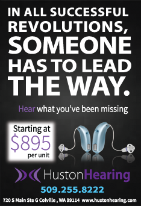
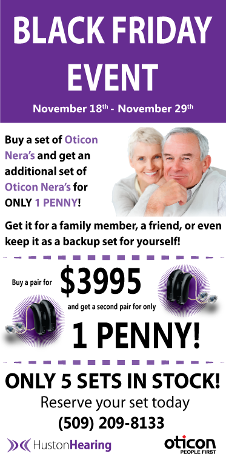
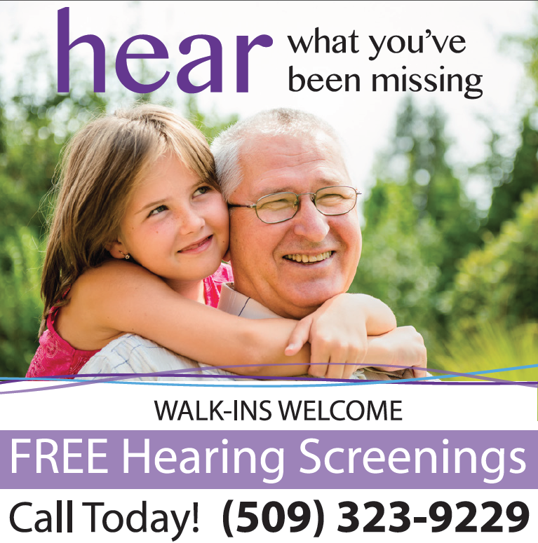
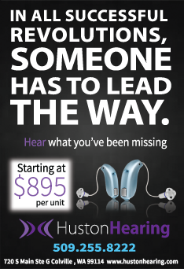
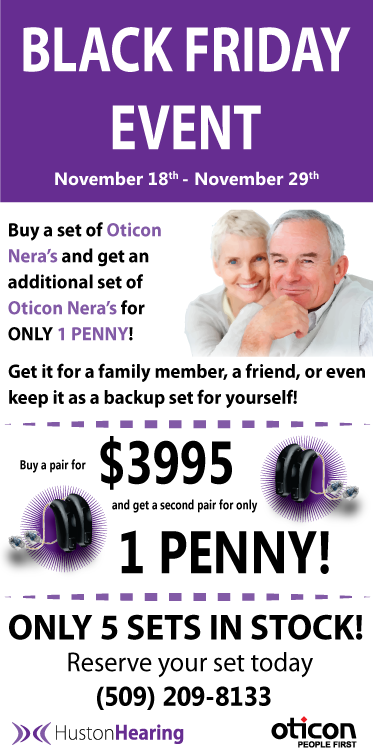
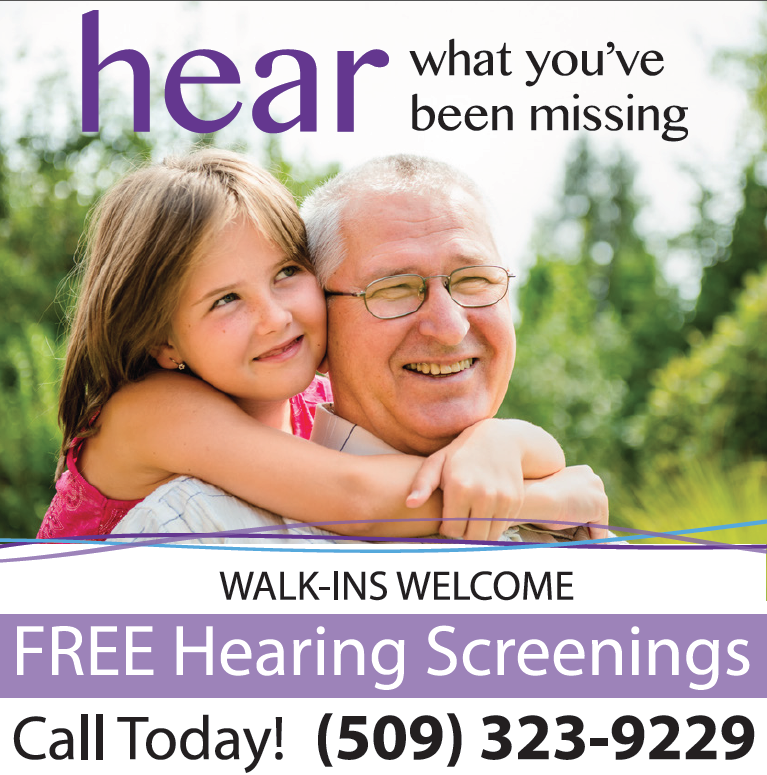

Professional Work
Huston Hearing Care & Audiology Website
I designed Huston Hearing's website with Wordpress and created 100% of the content. I was able to implement the entire design and user experience process for the site. Starting at the research and interview process, to sketches and wireframing, to information architecture and page flows, and then finally to the final design.
www.hustonhearing.com

Hearing Aid Buyer's Guide Website
Hearing Aid Buyer's Guide is a sister company of Huston Hearing Care & Audiology. Again, I was the senior designer and built the website with Wordpress, creating 100% of the content and the entire design and user experience process for the site.
www.hearingaidbuyersguide.com
 





Huston Hearing Promotional Materials
These are a few newspaper ads that the company has allowed me to be able to showcase. Each ad is built to target a different side of the customer is order to attract all angles of a potential buyer. The designs were meant to guide the reader along to the strong call-to-actions.

Huston Hearing Promotional Materials
This is actually four separate banners that are supposed to be able to stand on its own, but also be set side-by-side to get the full affect. The idea was to get a shocking response from the viewer so to make the image unforgettable to envoke more questions. This is part of a display at trade shows.
Huston Hearing Promotional Materials
This is a decibel chart designed to grab attention and give information to the viewer. The original purpose was to print this very large in scale to be used as a 'floor mat' to grab attention from people at trade shows. It proved to be a very successful way to bring people into the booth to talk more about the products.


Huston Hearing Promotional Materials
This is a 18x24 poster. This poster was designed to show current patients why Huston Hearing stand out from its competitors. The idea in the design was to put Huston Hearing's strengths in the middle of the page, while also giving the their column some contrast from the rest to bring focus to why Huston Hearing beleives it outmatches its competitors.
Huston Hearing Promotional Materials
These are window signs. They are very large in scale, roughly 6x6ft. The purpose of the design was to grab attention from people from far away. Bolding and adding contrasting to the word hear was a main focus as well as bring attention to free hearing screenings.
Huston Hearing Brochure
This is a two-sided brochure. This brochure was designed with a clean and simple grid look to convey to a third-party physician that Huston Hearing is a professional company that is clean and serious about taking care of their patient's hearing needs. All future brochures were designed in this format and look to keep brand unity.